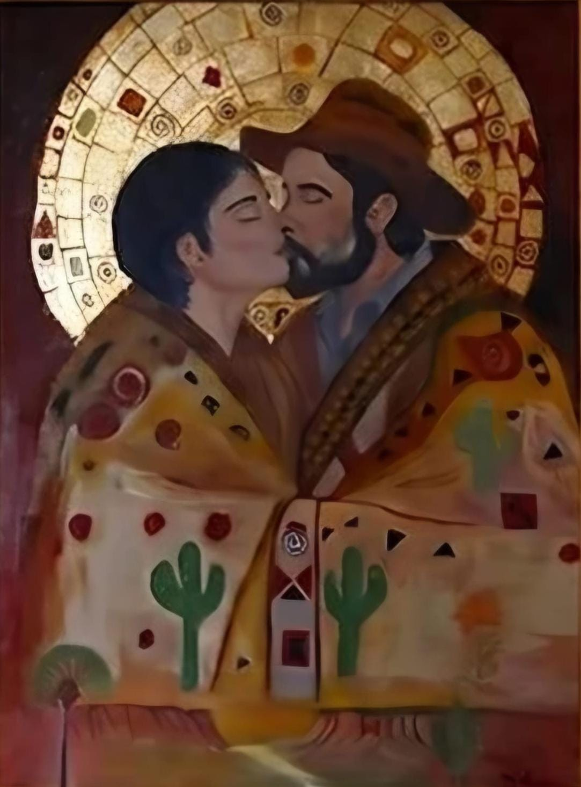

O BEIJO SERTANEJO
Nesta obra imponente, a artista Welika Welkovic promove um audacioso e poético diálogo transcultural ao reinterpretar a icônica obra O Beijo, do mestre austríaco Gustav Klimt, sob uma profunda e calorosa visão nordestina. A opulência dourada do simbolismo europeu é aqui transmutada na riqueza telúrica do sertão, onde o mosaico original dá lugar aos padrões de cactos, mandacarus e elementos da iconografia popular do Nordeste brasileiro.
Mais do que um abraço atemporal, os personagens centrais da pintura representam Diadorim e Riobaldo, figuras imortais da obra-prima Grande Sertão: Veredas. A criação da tela surge como uma justa homenagem aos 70 anos de publicação do romance de João Guimarães Rosa, eternizando em tinta o amor ambíguo, profundo e perigoso que cruza os gerais.
Para a artista, pintar esta tela inspirada em Klimt foi um exercício de profunda reverência e emoção. Welkovic canalizou o sentimento de universalidade do afeto para provar que a paixão e a mística da Viena do início do século XX encontram eco perfeito na resiliência e no lirismo do povo sertanejo. O manto que envolve o casal funciona como uma espécie de armadura e refúgio contra a aridez do mundo, celebrando a travessia mística e literária da identidade cultural brasileira.
THE SERTANEJO KISS
In this imposing work, artist Welika Welkovic creates a bold and poetic cross-cultural dialogue by reinterpreting The Kiss, the iconic work by Austrian master Gustav Klimt, through a profound and warm Northeastern Brazilian vision. The golden opulence of European symbolism is transformed here into the earthy richness of the sertao, where the original mosaic gives way to patterns of cacti, mandacarus, and elements of Northeastern Brazil's popular iconography.
More than a timeless embrace, the painting's central figures represent Diadorim and Riobaldo, immortal characters from the masterpiece Grande Sertao: Veredas. The canvas was created as a fitting tribute to the 70th anniversary of the publication of Joao Guimaraes Rosa's novel, preserving in paint the ambiguous, profound, and dangerous love that crosses the gerais.
For the artist, painting this work inspired by Klimt was an exercise in profound reverence and emotion. Welkovic channeled the universality of affection to show that the passion and mysticism of early twentieth-century Vienna find a perfect echo in the resilience and lyricism of the sertanejo people. The mantle surrounding the couple acts as a kind of armor and refuge against the world's aridity, celebrating the mystical and literary journey of Brazilian cultural identity.
DER SERTANEJO-KUSS
In diesem eindrucksvollen Werk führt die Künstlerin Welika Welkovic einen kühnen und poetischen interkulturellen Dialog, indem sie das ikonische Werk Der Kuss des österreichischen Meisters Gustav Klimt durch eine tief empfundene und warme nordostbrasilianische Sicht neu interpretiert. Die goldene Pracht der europäischen Symbolik verwandelt sich hier in den erdverbundenen Reichtum des Sertão, wo das ursprüngliche Mosaik Mustern von Kakteen, Mandakarus und Elementen der volkstümlichen Ikonografie Nordostbrasiliens weicht.
Mehr als eine zeitlose Umarmung stellen die zentralen Figuren des Gemäldes Diadorim und Riobaldo dar, unsterbliche Gestalten aus dem Meisterwerk Grande Sertão: Veredas. Die Leinwand entstand als würdige Hommage an den 70. Jahrestag der Veröffentlichung des Romans von João Guimarães Rosa und bewahrt die ambivalente, tiefe und gefährliche Liebe, die den Sertão durchquert.
Für die Künstlerin war das Malen dieses von Klimt inspirierten Bildes ein Akt tiefer Ehrfurcht und großer Emotion. Welkovic macht die Universalität der Zuneigung sichtbar und zeigt, dass die Leidenschaft und Mystik des Wiens zu Beginn des 20. Jahrhunderts ein vollkommenes Echo in der Widerstandskraft und im lyrischen Geist der Sertanejo-Bevölkerung finden. Der Mantel, der das Paar umhüllt, wirkt wie eine Rüstung und Zuflucht gegen die Dürre der Welt und feiert die mystische und literarische Reise der brasilianischen kulturellen Identität.